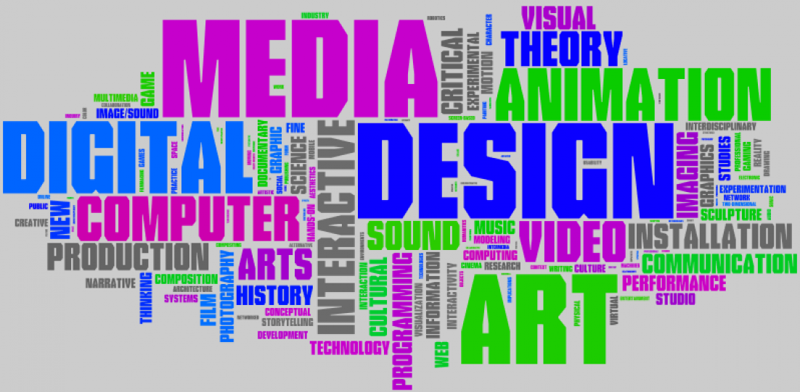

Hi! My name is Gil Marie Bnadiala, 14 years of age. And i believe in the saying that "Dont believe Everything uou hear,There are always Three Sides to a story,YOURS,THEIRS,and the TRUTH.
I am an SPA student,My major is Media Arts well there are 7 categories of Majors
1st of all is Media arts, "Media art" refers to artworks that depend on a technological component to function. The term "media" applies to any communication device used to transmit and store information.
2nd is Dance, Dance is move rhythmically to music, typically following a set sequence of steps.
3rd is Visual, Visual is a picture, piece of film, or display used to illustrate or accompany something.
4th is Vocals,is a musical performance involving singing.
5th is Instruments,A musical instrument is an instrument created or adapted to make musical sounds. In principle, any object that produces sound can be a musical instrument—it is through purpose that the object becomes a musical instrument.

6th is Creaative writing, creative writing is an art of sorts - the art of making things up. It's writing done in a way that is not academic or technical but still attracts an audience.
And the last is Theatre,Theatre is a building or outdoor area in which plays and other dramatic performances are given.